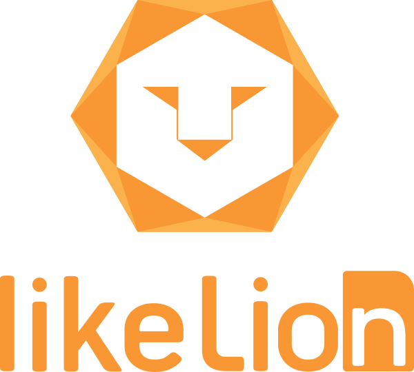

안녕하세요 이번에 7기로 합격한 심세은입니다.
3학년이 되고 나서 졸업 요건이나 공학 인증 정보를 얻고 싶어서 에브리타임(=에타)에서 각 종 정보를 얻었습니다. 하지만 에타에는 정확한 내용들이 없었습니다. 그래서 각 부서에 전화를 하면서 정보를 얻어야했습니다. 정보도 많아서 머리가 복잡했는데 그 정보를 얻기 위해 학교 홈페이지를 찾아봐야하는 점이 너무 불편했습니다.
그래서 저는 에타과 같은 대학 커뮤니티를 만들고 싶습니다. 에타와 비슷하게 자유, 장터, 홍보 게시판등 기존의 게시판들은 유지하며 추가 게시판을 만들고 싶습니다. 제가 추가하고 싶은 게시판은 각 부서의 담당자들이 작성할 수 있는 게시판으로 일반 학생들은 그 게시판에 글쓰기 권한을 주지 않는 것입니다. 그리고 댓글이나 채팅창을 만들어 각 부서의 담당자들과 실시간 채팅을 하여 각 종 정보를 얻을 수 있도록 만들고 싶습니다.